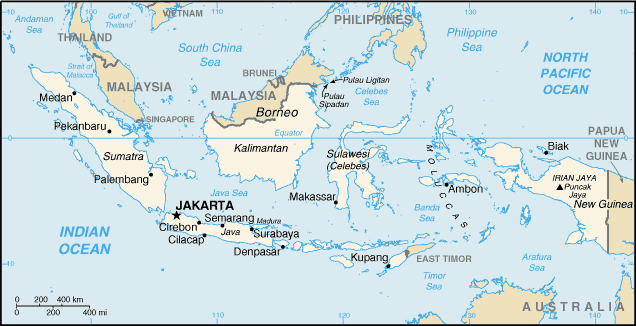
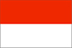

[Voir le carnet de route de l’Indonésie]
Itinéraire :
 Bali : Ubud, Lovina, Amed
Bali : Ubud, Lovina, Amed
 Lombok : Gili Air
Lombok : Gili Air
 Komodo : les varans et la Red Beach
Komodo : les varans et la Red Beach
 Flores : Labuan Bajo, Ruteng, Bajawa, Riung (parc maritime des 17 iles), Volcan Kelimutu, Maumere
Flores : Labuan Bajo, Ruteng, Bajawa, Riung (parc maritime des 17 iles), Volcan Kelimutu, Maumere
 
Superficie : 1 904 400 km2 (près de 4 fois la France).
Population : 215 millions d’habitants.
Capitale : Jakarta
Peuples et ethnies : Javanais (45%), Sundanais 14%, Madurèses (7%), Malais (7,5%), autres (26%) ; 300 groupes ethniques peuplent l’archipel.
Langues : Bahasa indonesia (la langue officielle), javanais, sundanais, balinais, minang, bugis, 400 langues et dialectes, anglais.
Religions : Musulmans (87%), chrétiens (9%), hindouistes.
Institutions politiques : République contrôlée par l’armée.
Principales activités : gaz naturel, bois, café, caoutchouc, pétrole, charbon, cuivre et bauxite, huile de palme, riz, coprah, textiles, produits chimiques, tourisme.
Visa : oui depuis peu. 25$US à l’aéroport de Bali.
Monnaie : La Roupie indonésienne - le Roupiah (1€ = 12 500 Roupiah en 2005)
Budget quotidien : 10 à 20 US $/jour.
- Consulat :
47 rue Cotambert, 75016 Paris.
Tél. : 01 45 03 07 60 (ouvert de 9h30 à 13h00 du lundi au vendredi).
Consulat à Marseille (tél. : 04 91 23 01 60).
Ambasssade de France :
| Adresse | 20, Jalan M.H., Thamrin |
| Ville | Jakarta-Pusat |
| Téléphone | 62 21 3142807 |
| Fax | 62 21 3143338 |
| URL | http://www.ambafrance-id.org |